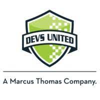
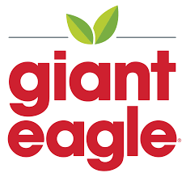
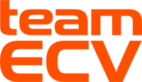

Work Experience
Front-End Developer Intern
Marcus Thomas LLC | Internship | Dec 2023 - Present
Assist development team in creating, maintaining and testing web applications
Salesforce Marketing Cloud Intern
Devs United | Internship | May 2023 - Aug 2023
Worked Independently and with a Team to create html emails email using Salesforce Marketing Cloud, incorporating personalization. Successfully troubleshot and adapted code for all different email clients. Strengthened my knowledge in marketing cloud Areas. Completed projects in SQL.
Salesforce Marketing Cloud Intern
Devs United | Internship | May 2022 - Aug 2022
Worked with a team to create and build emails using Salesforce Marketing Cloud for a client. Also completing independent tasks to strengthen my knowledge of Journeys, Automations, Landing Pages/Microsites, and Data Extensions/Lists with the marketing cloud.
 Software Engineer Intern
Software Engineer Intern
CHAMPtitles | Internship | May 2021 - Aug 2021
Using Spring Boot Java and React Javascript, I built a new portal for Champ's Digital Total Loss application. The portal serves as a place to perform administrative tasks for the application, such as onboarding new clients and creating new users.
Bakery Clerk
Giant Eagle | Part-time | Jun 2019 - Feb 2021
Packaged all products, to ensure customers had everything available, as well as worked with customers, to create a cake design to fit their function.
Volleyball Coach
Eastside Cleveland Juniors Volleyball | Part-time | May 2021 - Aug 2021
Coached individuals between the ages of 8 and 11 on volleyball techniques as well as developed training and exercise programs to meet individual requirements and team play strategies.
Communications Intern
NASA Glenn Research Center | Internship | May 2021 - Aug 2021
Worked closely with a mentor, to collect and organize data from a Satellite so that it could be easily accessible and performed calculations to find the optimal positioning for the Satellite relative to the sun.